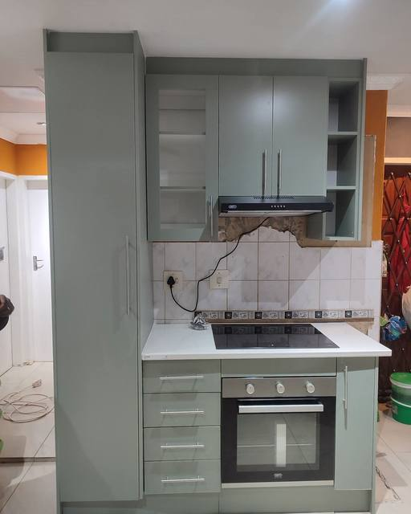
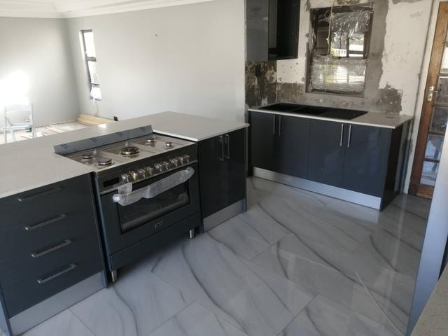
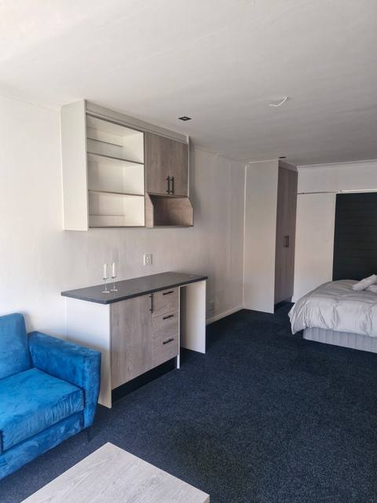

Renovation & woodworks in Rosebank
Rosebank's leafy streets have Victorian and Edwardian homes alongside student houses. High ceilings and big sash windows are common, and so are awkward alcoves that suit built-in shelving. We're often asked for built-in shelving and cupboards for alcoves, kitchen renovations in older homes, and timber door and window repairs.
Examples of our work
From our projects across Cape Town.





Working in Rosebank
Rosebank lies between Mowbray and Rondebosch, below UCT's main campus and around the Baxter Theatre. Its streets have Victorian and Edwardian houses with high ceilings, big sash windows and fireplaces, many split into flats or rented to students. The tall walls and chimney breasts leave alcoves that suit built-in shelving and cupboards, and high ceilings mean wardrobes can go much taller than standard. Older kitchens here were often added on later, so refits sometimes start with fixing uneven floors and walls.
Kitchens · Built-in cupboards · Doors & garage doors · Furniture · Decks · Renovations →
Questions from Rosebank
Can you build cupboards up to high ceilings in Rosebank?
Yes. Floor-to-ceiling cupboards suit Rosebank's high ceilings well; we design them in sections so they can be brought into the house and assembled in place.
Can you build shelves into the alcoves next to a fireplace?
Yes. Alcove shelving and cupboards are one of the most common jobs in older homes. We scribe them to the walls so there are no gaps.
How tall can a wardrobe be in a house with high ceilings?
As tall as the room allows. We build them in sections so they fit through doors and stairs, then join them in place.